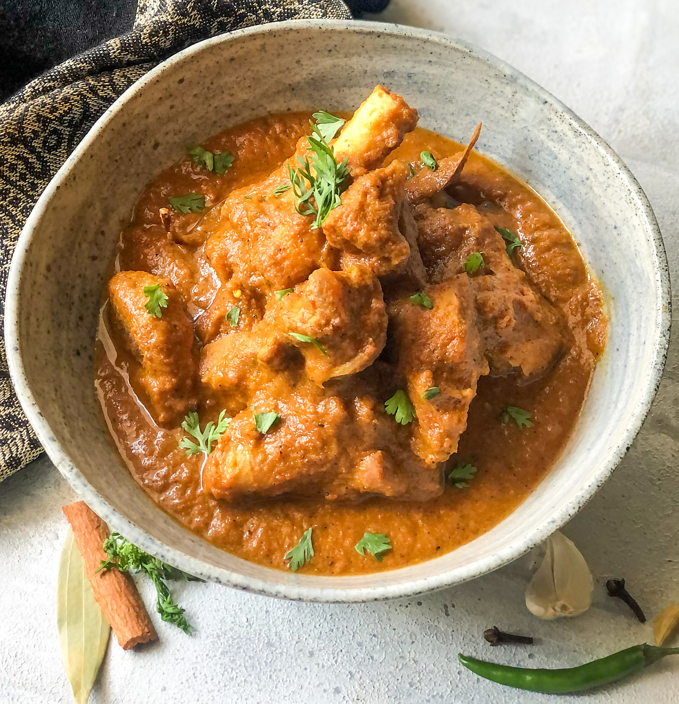

Mutton Curry

INGREDIENTS :
For the marinade
- 750 grams Mutton , on the bone
- Salt
- 1 teaspoon Lemon juice
- 1 teaspoon Turmeric powder (Haldi)
- 1/2 cup Curd (Dahi / Yogurt)
- To be ground into a paste
- 3 Onions , roughly chopped
- 10 cloves Garlic
- 2 inch Ginger
For the curry
- 2 tablespoons Ghee
- 2 Cloves (Laung)
- 1 Bay leaf (tej patta)
- 2 Cardamom (Elaichi) Pods/Seeds
- 1 inch Cinnamon Stick (Dalchini)
- 1 teaspoon Fennel seeds (Saunf)
- 3 Green Chillies
- Salt
- 4 Tomatoes , pureed
- 1 teaspoon Red Chilli powder
- 1 teaspoon Cumin powder (Jeera)
- 1 teaspoon Coriander (Dhania) Powder
- 2 tablespoons Meat masala
- 1 teaspoon Garam masala powder
- 1 teaspoon Kasuri Methi (Dried Fenugreek Leaves)
- 4 sprig Coriander (Dhania) Leaves
METHOD OF PREPARATION :
- begin making Spicy Pressure Cooker Mutton Curry Recipe firstly marinate the mutton.
- To marinate the mutton, in a large mixing bowl, combine the washed and cleaned mutton, along with curd, salt, lemon juice and turmeric powder and mix well. Cover and set aside for at least an hour.
- Make a paste of the onion, ginger and garlic and keep aside.
- To make the curry, heat ghee in a pressure cooker over medium heat; add the whole spices, bay leaf, clove, cardamom, saunf, and cinnamon stick.
- When the whole spices begin to sizzle, add the green chillies. Saute for 30 seconds or until the raw smell goes away.
- Next, add in the onion ginger garlic paste and saute for about a minute. Stir in the red chilli powder, jeera powder, coriander powder and meat masala and continue to saute for another minute.
- Once this mutton curry masala mixture has come together, add the tomato puree, cover and cook for 2 minutes. When you feel the raw tomato small has gone, add in the mutton along with the marinade.
- Stir well, check for salt and spices and adjust seasoning according to your taste.
- Close the pressure cooker and pressure cook the mutton curry for about 5-6 whistles and turn off the heat. Allow the pressure to release naturally. Then open and stir in the kasuri methi.
- Garnish the mutton curry with coriander leaves and serve hot.
- Serve Spicy Pressure Cooker Mutton Curry Recipe along with Whole Wheat Lachha Paratha and Tomato Onion Cucumber Raita for a weekend dinner.